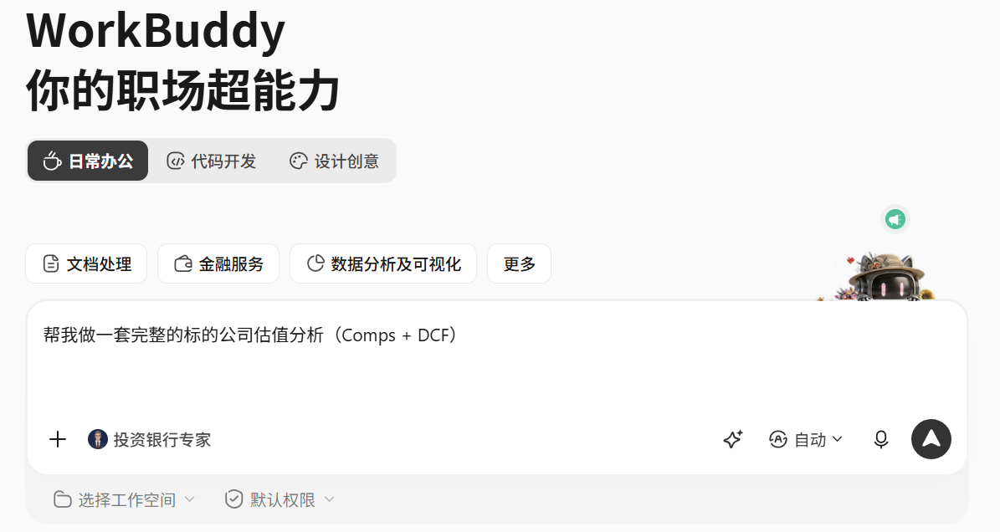
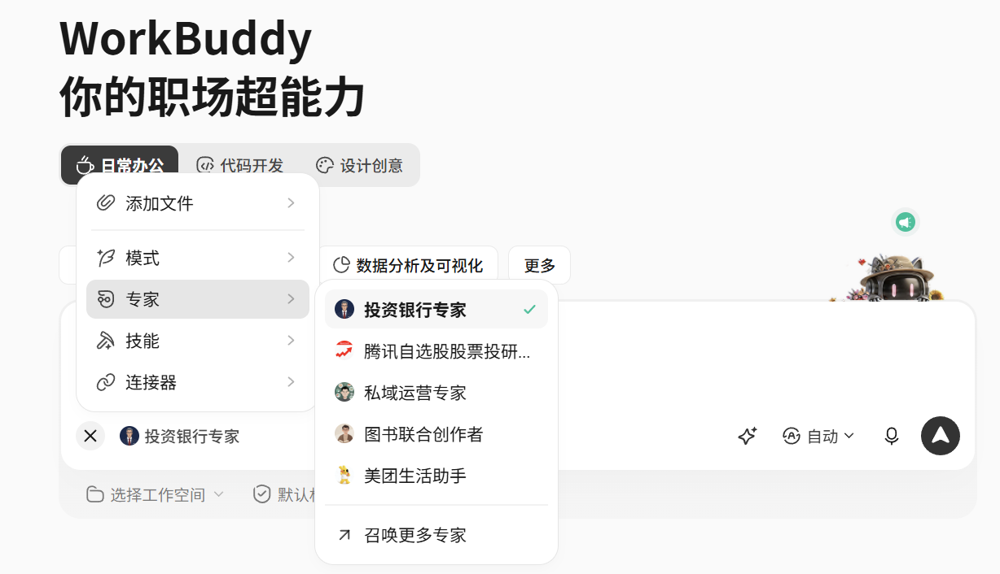
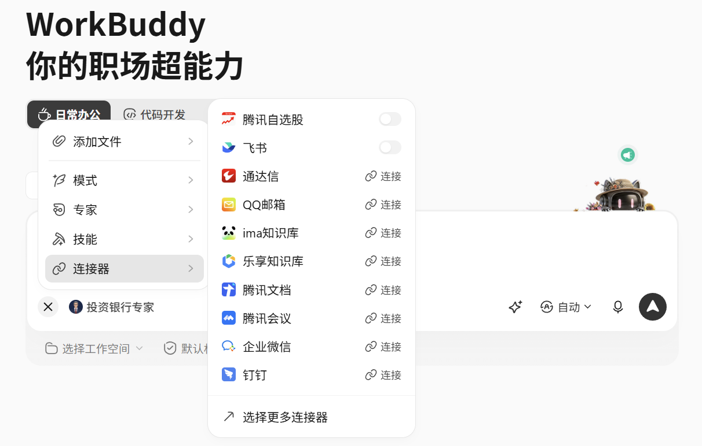
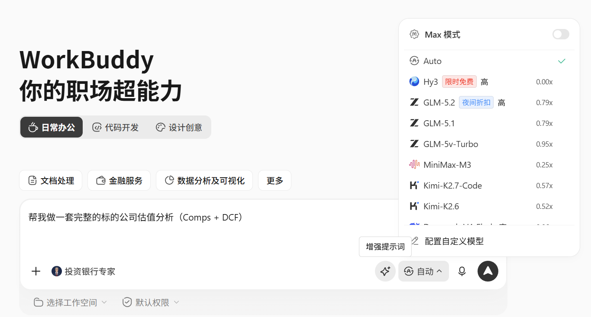

WorkBuddy 交互界面参考
业界智能体工作平台交互形态参考,为 Automy 产品原型设计提供借鉴。
参考图集
4 张
💡
设计参考说明
以下为 WorkBuddy 类智能体工作平台的交互界面参考,Automy 在借鉴其「IM 对话 + 任务卡片 + 工作流编排」交互范式的基础上,进一步强化「长期记忆、技能市场、专家订阅、MCP 企业系统集成」等企业级能力。
参考图 1 · 主交互界面
主视图

参考图 2 · 任务与工作流
任务流

参考图 3 · 智能体编排
编排

参考图 4 · 集成与扩展
集成

Automy 在此基础上的差异化演进
演进方向
🧠 长期记忆沉淀
不仅是对话,而是跨会话沉淀用户偏好、项目记忆与决策历史,实现"懂你"的陪伴式交互。
🏪 双级技能市场
企业级 + 公共级技能市场,用户可自定义技能并共享,避免重复造轮子。
🤖 专家 Agent 订阅
预置投研、法务、风控等领域专家,订阅即用,持续学习迭代。
🔌 MCP 标准协议
以 Model Context Protocol 标准化接入企业系统,用户主动勾选,可控可审计。
🔒 数据主权归企业
私有化部署,全链路审计,敏感数据不出企业边界,满足金融合规要求。
⏰ 主动触达能力
分布式定时任务 + IM 通道,智能体可主动通知用户,从被动应答走向主动陪伴。